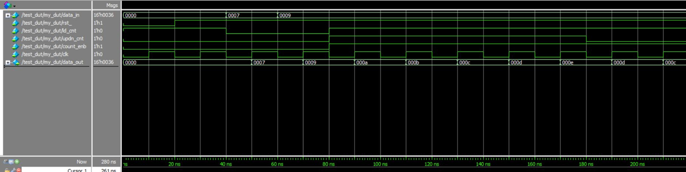
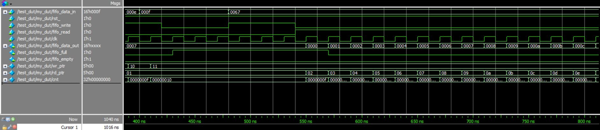

This project includes the design two components in SystemVerilog, as well as their verification using properties and assertions. The first component is an up/down counter, and the second a synchronous FIFO memory.


All technical information can be found in the GitHub repository below.